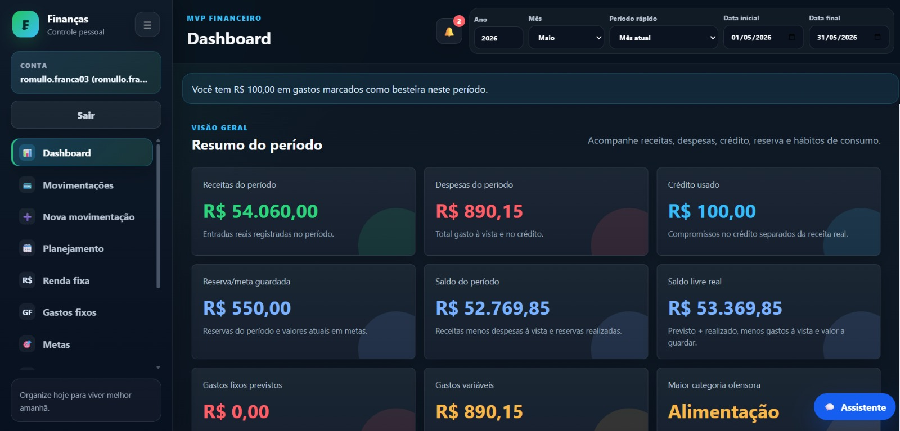
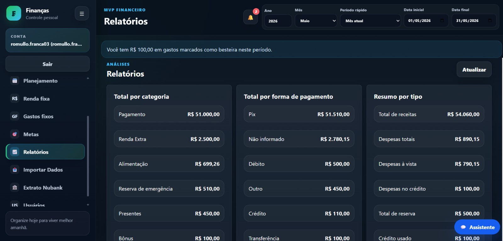
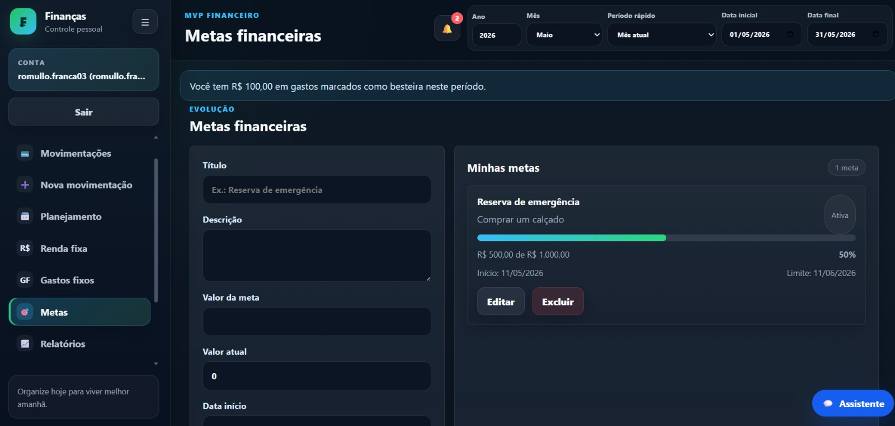
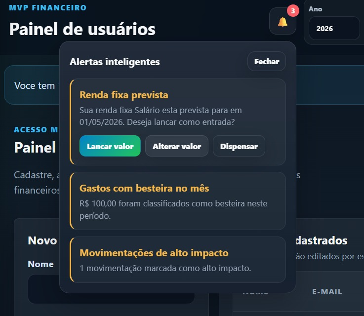

Problema
Muitas pessoas têm dificuldade para entender para onde o dinheiro está indo, controlar gastos recorrentes e manter previsibilidade financeira. O Financias centraliza essas informações e transforma dados financeiros em decisões mais claras.
Case profissional - finanças pessoais
Plataforma de Controle Financeiro Inteligente
Sistema web desenvolvido para ajudar usuários a controlar entradas, saídas, reservas, gastos fixos, metas e projeções financeiras de forma simples, segura e inteligente.

Visão geral
O Financias ajuda o usuário a controlar entradas e saídas, organizar gastos fixos, acompanhar metas, visualizar projeções futuras, melhorar hábitos financeiros e tomar decisões mais conscientes.
Muitas pessoas têm dificuldade para entender para onde o dinheiro está indo, controlar gastos recorrentes e manter previsibilidade financeira. O Financias centraliza essas informações e transforma dados financeiros em decisões mais claras.
A plataforma reúne controle de receitas, despesas, reservas, renda fixa, gastos fixos, movimentações automáticas, notificações, dashboard inteligente e segurança por usuário.
Funcionalidades principais
Registro de entradas, renda fixa, renda extra e previsão de recebimentos.
Cadastro de gastos por categoria, forma de pagamento e impacto no saldo.
Acompanhamento de saldo reservado, saldo livre e valores guardados em metas.
Controle de compromissos recorrentes e despesas que afetam o planejamento mensal.
Entradas previstas, confirmação de recebimentos e projeção de orçamento.
Definição de objetivos, valor atual, progresso e prazo de conclusão.
Alertas de vencimento, movimentações recorrentes e confirmações importantes.
Resumo de saldo, receitas, despesas, crédito, reservas e categorias ofensores.
Login individual, redefinição de senha, primeiro acesso e sessões seguras.
Proteção de dados por usuário com políticas de Row Level Security no Supabase.
Tecnologias utilizadas
Galeria de telas
As telas mostram dashboard, relatórios, metas, notificações, login e assistente financeiro por mensagens.



Arquitetura
O sistema foi criado com separação de responsabilidades, componentes reutilizáveis, renderização dinâmica, comunicação assíncrona com o banco, autenticação JWT, sessões seguras e permissões por usuário.
Diferenciais
Aprendizados
O Financias consolidou práticas de modelagem relacional, autenticação, regras de segurança por usuário, dashboards com leitura rápida e organização de fluxos recorrentes para uso real.
Funcionalidades futuras
Importação de extrato bancário CSV, integração com bancos digitais e API para dashboards externos.
Categorização automática de gastos, geração de insights financeiros e integração futura com Power BI.
Arquitetura planejada para futuras análises inteligentes, como previsão de gastos, identificação de padrões de consumo e recomendações personalizadas com base no histórico financeiro do usuário.